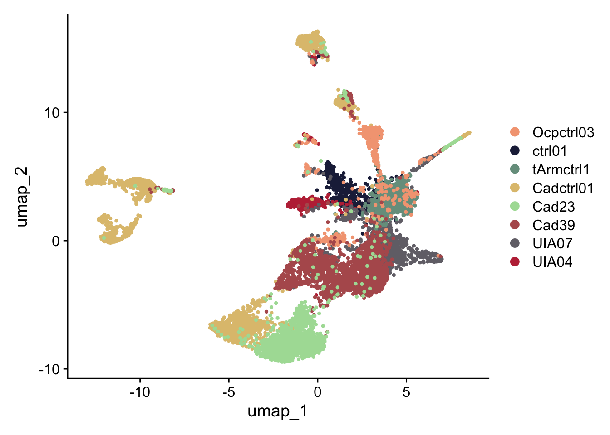

HumanAneurysm
A.DeMartin
2024-03-19
Last updated: 2024-08-23
Checks: 5 2
Knit directory: HumanAneurysm/
This reproducible R Markdown analysis was created with workflowr (version 1.7.1). The Checks tab describes the reproducibility checks that were applied when the results were created. The Past versions tab lists the development history.
The R Markdown file has unstaged changes. To know which version of
the R Markdown file created these results, you’ll want to first commit
it to the Git repo. If you’re still working on the analysis, you can
ignore this warning. When you’re finished, you can run
wflow_publish to commit the R Markdown file and build the
HTML.
Great job! The global environment was empty. Objects defined in the global environment can affect the analysis in your R Markdown file in unknown ways. For reproduciblity it’s best to always run the code in an empty environment.
The command set.seed(20240319) was run prior to running
the code in the R Markdown file. Setting a seed ensures that any results
that rely on randomness, e.g. subsampling or permutations, are
reproducible.
Great job! Recording the operating system, R version, and package versions is critical for reproducibility.
Nice! There were no cached chunks for this analysis, so you can be confident that you successfully produced the results during this run.
Using absolute paths to the files within your workflowr project makes it difficult for you and others to run your code on a different machine. Change the absolute path(s) below to the suggested relative path(s) to make your code more reproducible.
| absolute | relative |
|---|---|
| /Users/immbio/Desktop/Project/Angelina/HumanAneurysm/data/AneurysmDataMarch2024/ | data/AneurysmDataMarch2024 |
| /Users/immbio/Desktop/Project/Angelina/HumanAneurysm/data/AneurysmDataApril2024/ | data/AneurysmDataApril2024 |
| /Users/immbio/Desktop/Project/Angelina/HumanAneurysm/data/AneurysmDataJuly2024/ | data/AneurysmDataJuly2024 |
| /Users/immbio/Desktop/Project/Angelina/HumanAneurysm/data/AneurysmDataAugust2024/ | data/AneurysmDataAugust2024 |
| /Users/immbio/Desktop/Project/Angelina/HumanAneurysm/data/Aneuryms_allmerged_seurat.rds | data/Aneuryms_allmerged_seurat.rds |
| /Users/immbio/Desktop/Project/Angelina/HumanAneurysm/analysis/markerGenes | analysis/markerGenes |
| /Users/immbio/Desktop/Project/Angelina/HumanAneurysm/analysis/markerGenesintbatch | analysis/markerGenesintbatch |
| /Users/immbio/Desktop/Project/Angelina/HumanAneurysm/analysis/markerGenesintpat | analysis/markerGenesintpat |
Great! You are using Git for version control. Tracking code development and connecting the code version to the results is critical for reproducibility.
The results in this page were generated with repository version d91538d. See the Past versions tab to see a history of the changes made to the R Markdown and HTML files.
Note that you need to be careful to ensure that all relevant files for
the analysis have been committed to Git prior to generating the results
(you can use wflow_publish or
wflow_git_commit). workflowr only checks the R Markdown
file, but you know if there are other scripts or data files that it
depends on. Below is the status of the Git repository when the results
were generated:
Ignored files:
Ignored: .DS_Store
Ignored: .Rhistory
Ignored: .Rproj.user/
Ignored: analysis/.Rhistory
Ignored: data/AneurysmDataApril2024/
Ignored: data/AneurysmDataAugust2024/
Ignored: data/AneurysmDataJuly2024/
Ignored: data/AneurysmDataMarch2024/
Untracked files:
Untracked: analysis/markerGenesintbatch
Unstaged changes:
Modified: analysis/HumanAneurysm.Rmd
Modified: analysis/QCindividual.Rmd
Modified: analysis/markerGenes
Note that any generated files, e.g. HTML, png, CSS, etc., are not included in this status report because it is ok for generated content to have uncommitted changes.
These are the previous versions of the repository in which changes were
made to the R Markdown (analysis/HumanAneurysm.Rmd) and
HTML (docs/HumanAneurysm.html) files. If you’ve configured
a remote Git repository (see ?wflow_git_remote), click on
the hyperlinks in the table below to view the files as they were in that
past version.
| File | Version | Author | Date | Message |
|---|---|---|---|---|
| Rmd | d91538d | angeldemartin | 2024-07-16 | update analysise |
| html | d91538d | angeldemartin | 2024-07-16 | update analysise |
| html | d6526d4 | angeldemartin | 2024-04-29 | update gitignore |
| Rmd | 4ede223 | angeldemartin | 2024-04-29 | initial commit |
load packages
##############################start pre-processing##############################
load files and merge
### load and merge all
basedir <- "/Users/immbio/Desktop/Project/Angelina/HumanAneurysm/data/AneurysmDataMarch2024/"
fileNamList <- list.files(path = basedir)
for(i in 1:length(fileNamList)){
seuratS <- readRDS(paste0(basedir, fileNamList[i]))
if(exists("seuratM")){
seuratM <- merge(x = seuratM, y = seuratS)
}else{
seuratM <- seuratS
}
}
remove(seuratS)
table(seuratM$dataset)
344261_07-7_20240219_Hu_nucseq_control_01 344261_08-8_20240219_Hu_nucseq_UIA_04
598 398
344261_09-9_20240219_Hu_nucseq_UIA_07
1132 table(seuratM$orig.ident)
2128 ### load and merge all
basedir <- "/Users/immbio/Desktop/Project/Angelina/HumanAneurysm/data/AneurysmDataApril2024/"
fileNamList <- list.files(path = basedir)
for(i in 1:length(fileNamList)){
seuratS <- readRDS(paste0(basedir, fileNamList[i]))
if(exists("seuratM")){
seuratM <- merge(x = seuratM, y = seuratS)
}else{
seuratM <- seuratS
}
}
remove(seuratS)
table(seuratM$dataset)
344261_07-7_20240219_Hu_nucseq_control_01 344261_08-8_20240219_Hu_nucseq_UIA_04
598 398
344261_09-9_20240219_Hu_nucseq_UIA_07 348751_2-7_20240326_Hu_nucseq_tArm_ctrl_1
1132 1081
348751_3-8_20240326_Hu_nucseq_tArm_ctrl_2 348751_4-9_20240326_Hu_nucseq_UIA_001
798 351
348751_5-10_20240326_Hu_nucseq_UIA_003 348751_6-11_20240326_Hu_nucseq_UIA_005
5107 13226
348751_7-12_20240326_Hu_nucseq_UIA_012 348751_8-13_20240326_Hu_nucseq_UIA_002
1083 23093 table(seuratM$orig.ident)
46867 ### load and merge all
basedir <- "/Users/immbio/Desktop/Project/Angelina/HumanAneurysm/data/AneurysmDataJuly2024/"
fileNamList <- list.files(path = basedir)
for(i in 1:length(fileNamList)){
seuratS <- readRDS(paste0(basedir, fileNamList[i]))
if(exists("seuratM")){
seuratM <- merge(x = seuratM, y = seuratS)
}else{
seuratM <- seuratS
}
}
### load and merge all
basedir <- "/Users/immbio/Desktop/Project/Angelina/HumanAneurysm/data/AneurysmDataAugust2024/"
fileNamList <- list.files(path = basedir)
for(i in 1:length(fileNamList)){
seuratS <- readRDS(paste0(basedir, fileNamList[i]))
if(exists("seuratM")){
seuratM <- merge(x = seuratM, y = seuratS)
}else{
seuratM <- seuratS
}
}
remove(seuratS)
table(seuratM$dataset)
344261_07-7_20240219_Hu_nucseq_control_01 344261_08-8_20240219_Hu_nucseq_UIA_04
598 398
344261_09-9_20240219_Hu_nucseq_UIA_07 348751_2-7_20240326_Hu_nucseq_tArm_ctrl_1
1132 1081
348751_3-8_20240326_Hu_nucseq_tArm_ctrl_2 348751_4-9_20240326_Hu_nucseq_UIA_001
798 351
348751_5-10_20240326_Hu_nucseq_UIA_003 348751_6-11_20240326_Hu_nucseq_UIA_005
5107 13226
348751_7-12_20240326_Hu_nucseq_UIA_012 348751_8-13_20240326_Hu_nucseq_UIA_002
1083 23093
353921_25-25_20240529_Hu_nucseq_Cadaver_ctrl_01 353921_26-26_20240529_Hu_nucseq_STA_LG
2270 1605
353921_27-27_20240522_Hu_nucseq_Ocp_ctrl_03 359861_19-11_20240730_Hu_nucseq_Cad39_Aneur
487 2116
359861_20-12_20240730_Hu_nucseq_Cad23_Aneur
1454 table(seuratM$orig.ident)
54799 add metadata
### add any type of metadata
### patient
ctrl01 <- c("344261_07-7_20240219_Hu_nucseq_control_01")
UIA04 <- c("344261_08-8_20240219_Hu_nucseq_UIA_04")
UIA07 <- c("344261_09-9_20240219_Hu_nucseq_UIA_07")
tArmctrl1 <- c("348751_2-7_20240326_Hu_nucseq_tArm_ctrl_1")
tArmctrl2 <- c("348751_3-8_20240326_Hu_nucseq_tArm_ctrl_2")
UIA001 <- c("348751_4-9_20240326_Hu_nucseq_UIA_001")
UIA3 <- c("348751_5-10_20240326_Hu_nucseq_UIA_003")
UIA5 <- c("348751_6-11_20240326_Hu_nucseq_UIA_005")
UIA012 <- c("348751_7-12_20240326_Hu_nucseq_UIA_012")
UIA002 <- c("348751_8-13_20240326_Hu_nucseq_UIA_002")
Cadctrl01 <- c("353921_25-25_20240529_Hu_nucseq_Cadaver_ctrl_01")
STALG <- c("353921_26-26_20240529_Hu_nucseq_STA_LG")
Ocpctrl03 <- c("353921_27-27_20240522_Hu_nucseq_Ocp_ctrl_03")
Cad23 <- c("359861_20-12_20240730_Hu_nucseq_Cad23_Aneur")
Cad39 <- c("359861_19-11_20240730_Hu_nucseq_Cad39_Aneur")
seuratM$patient <- "pat_nr"
seuratM$patient[which(seuratM$dataset %in% ctrl01)] <- "ctrl01"
seuratM$patient[which(seuratM$dataset %in% UIA04)] <- "UIA04"
seuratM$patient[which(seuratM$dataset %in% UIA07)] <- "UIA07"
seuratM$patient[which(seuratM$dataset %in% tArmctrl1)] <- "tArmctrl1"
seuratM$patient[which(seuratM$dataset %in% tArmctrl2)] <- "tArmctrl2"
seuratM$patient[which(seuratM$dataset %in% UIA001)] <- "UIA001"
seuratM$patient[which(seuratM$dataset %in% UIA3)] <- "UIA3"
seuratM$patient[which(seuratM$dataset %in% UIA5)] <- "UIA5"
seuratM$patient[which(seuratM$dataset %in% UIA012)] <- "UIA012"
seuratM$patient[which(seuratM$dataset %in% UIA002)] <- "UIA002"
seuratM$patient[which(seuratM$dataset %in% Cadctrl01)] <- "Cadctrl01"
seuratM$patient[which(seuratM$dataset %in% STALG)] <- "STALG"
seuratM$patient[which(seuratM$dataset %in% Ocpctrl03)] <- "Ocpctrl03"
seuratM$patient[which(seuratM$dataset %in% Cad23)] <- "Cad23"
seuratM$patient[which(seuratM$dataset %in% Cad39)] <- "Cad39"
table(seuratM$patient)
Cad23 Cad39 Cadctrl01 ctrl01 Ocpctrl03 STALG tArmctrl1 tArmctrl2 UIA001 UIA002
1454 2116 2270 598 487 1605 1081 798 351 23093
UIA012 UIA04 UIA07 UIA3 UIA5
1083 398 1132 5107 13226 ### batch
batchMarch24 <- c("344261_07-7_20240219_Hu_nucseq_control_01","344261_08-8_20240219_Hu_nucseq_UIA_04","344261_09-9_20240219_Hu_nucseq_UIA_07")
batchApril24 <- c("348751_2-7_20240326_Hu_nucseq_tArm_ctrl_1","348751_3-8_20240326_Hu_nucseq_tArm_ctrl_2","348751_4-9_20240326_Hu_nucseq_UIA_001", "348751_5-10_20240326_Hu_nucseq_UIA_003", "348751_6-11_20240326_Hu_nucseq_UIA_005", "348751_7-12_20240326_Hu_nucseq_UIA_012","348751_8-13_20240326_Hu_nucseq_UIA_002")
batchJuly24 <- c("353921_25-25_20240529_Hu_nucseq_Cadaver_ctrl_01","353921_26-26_20240529_Hu_nucseq_STA_LG","353921_27-27_20240522_Hu_nucseq_Ocp_ctrl_03")
batchAugust24 <- c("359861_20-12_20240730_Hu_nucseq_Cad23_Aneur","359861_19-11_20240730_Hu_nucseq_Cad39_Aneur")
seuratM$batch <- "batch"
seuratM$batch[which(seuratM$dataset %in% batchMarch24)] <- "batchMarch24"
seuratM$batch[which(seuratM$dataset %in% batchApril24)] <- "batchApril24"
seuratM$batch[which(seuratM$dataset %in% batchJuly24)] <- "batchJuly24"
seuratM$batch[which(seuratM$dataset %in% batchAugust24)] <- "batchAugust24"
table(seuratM$batch)
batchApril24 batchAugust24 batchJuly24 batchMarch24
44739 3570 4362 2128 ### source
surgery <- c("344261_07-7_20240219_Hu_nucseq_control_01","344261_08-8_20240219_Hu_nucseq_UIA_04","344261_09-9_20240219_Hu_nucseq_UIA_07","348751_2-7_20240326_Hu_nucseq_tArm_ctrl_1","348751_3-8_20240326_Hu_nucseq_tArm_ctrl_2","348751_4-9_20240326_Hu_nucseq_UIA_001", "348751_5-10_20240326_Hu_nucseq_UIA_003", "348751_6-11_20240326_Hu_nucseq_UIA_005", "348751_7-12_20240326_Hu_nucseq_UIA_012","348751_8-13_20240326_Hu_nucseq_UIA_002","353921_26-26_20240529_Hu_nucseq_STA_LG","353921_27-27_20240522_Hu_nucseq_Ocp_ctrl_03")
autopsy <- c("353921_25-25_20240529_Hu_nucseq_Cadaver_ctrl_01", "359861_20-12_20240730_Hu_nucseq_Cad23_Aneur", "359861_19-11_20240730_Hu_nucseq_Cad39_Aneur")
seuratM$source <- "source"
seuratM$source[which(seuratM$dataset %in% surgery)] <- "surgery"
seuratM$source[which(seuratM$dataset %in% autopsy)] <- "autopsy"
table(seuratM$source)
autopsy surgery
5840 48959 ##set color vectors
col <- c("#202547","#BE3144","#727077","#355C7D","#779d8d","#dfc27d","#f4a582","#B45B5C")
names(col) <- c("0", "1", "2", "3", "4", "5", "6")
#get colors
#brewer.pal(n= 10, name = "Spectral")
#"#9E0142" "#D53E4F" "#F46D43" "#FDAE61" "#FEE08B" "#E6F598" "#ABDDA4" "#66C2A5" "#3288BD" "#5E4FA2"
#brewer.pal(n= 10, name = "Accent")
#"#7FC97F" "#BEAED4" "#FDC086" "#FFFF99" "#386CB0" "#F0027F" "#BF5B17" "#666666"
colpat <- c("#9E0142", "#D53E4F", "#F46D43", "#FDAE61", "#FEE08B", "#E6F598", "#ABDDA4", "#66C2A5", "#3288BD", "#5E4FA2" ,"#BEAED4" , "#FDC086", "#727077","#B45B5C","#202547")
names(colpat) <- unique(seuratM$patient)
colbatch <- c("#779d8d","#dfc27d","#f4a582","#D53E4F")
names(colbatch) <- unique(seuratM$batch)
colsource <- c("#779d8d","#f4a582")
names(colsource) <- unique(seuratM$source)QC merged
### QC merged
# Extract meta.data from the Seurat object
meta.data <- seuratM@meta.data
# Create the density plot
ptotalpat <- ggplot(data = meta.data, aes(x = total, color = patient, fill = patient)) +
geom_density(alpha = 0.2) +
scale_fill_manual(values = colpat) +
scale_color_manual(values = colpat) +
theme_classic() +
scale_x_log10() +
ylab("density") +
geom_vline(xintercept = 100)
pdetectedpat <- ggplot(data = meta.data, aes(x = detected, color = patient, fill = patient)) +
geom_density(alpha = 0.2) +
scale_fill_manual(values = colpat) +
scale_color_manual(values = colpat) +
theme_classic() +
scale_x_log10() +
ylab("density") +
geom_vline(xintercept = 100)
ptotalbatch <- ggplot(data = meta.data, aes(x = total, color = batch, fill = batch)) +
geom_density(alpha = 0.2) +
scale_fill_manual(values = colbatch) +
scale_color_manual(values = colbatch) +
theme_classic() +
scale_x_log10() +
ylab("density") +
geom_vline(xintercept = 100)
pdetectedbatch <- ggplot(data = meta.data, aes(x = detected, color = batch, fill = batch)) +
geom_density(alpha = 0.2) +
scale_fill_manual(values = colbatch) +
scale_color_manual(values = colbatch) +
theme_classic() +
scale_x_log10() +
ylab("density") +
geom_vline(xintercept = 100)
ptotalsource <- ggplot(data = meta.data, aes(x = total, color = source, fill = source)) +
geom_density(alpha = 0.2) +
scale_fill_manual(values = colsource) +
scale_color_manual(values = colsource) +
theme_classic() +
scale_x_log10() +
ylab("density") +
geom_vline(xintercept = 100)
pdetectedsource <- ggplot(data = meta.data, aes(x = detected, color = source, fill = source)) +
geom_density(alpha = 0.2) +
scale_fill_manual(values = colsource) +
scale_color_manual(values = colsource) +
theme_classic() +
scale_x_log10() +
ylab("density") +
geom_vline(xintercept = 100)
# Return the plots as a list
list(ptotalpat, pdetectedpat, ptotalbatch ,pdetectedbatch, ptotalsource, pdetectedsource)[[1]]
| Version | Author | Date |
|---|---|---|
| d91538d | angeldemartin | 2024-07-16 |
[[2]]
| Version | Author | Date |
|---|---|---|
| d91538d | angeldemartin | 2024-07-16 |
[[3]]
| Version | Author | Date |
|---|---|---|
| d91538d | angeldemartin | 2024-07-16 |
[[4]]
| Version | Author | Date |
|---|---|---|
| d91538d | angeldemartin | 2024-07-16 |
[[5]]
[[6]] ## filter and rerun seurat
## filter and rerun seurat
##filter for Cadaver_ctr_01, UIA_07, UIA_04, Ocp_ctrl_03, control_01, tArm_ctr_1
seuratMfil <- subset(seuratM, patient %in% c("Cadctrl01", "UIA07", "UIA04", "Ocpctrl03", "ctrl01", "tArmctrl1", "Cad23", "Cad39"))
table(seuratMfil$dataset)
seuratM <- seuratMfil
remove(seuratMfil)
table(seuratM$dataset)
#rerun seurat
seuratM <- NormalizeData (object = seuratM)
seuratM <- FindVariableFeatures(object = seuratM)
seuratM <- ScaleData(object = seuratM, verbose = TRUE)
seuratM <- RunPCA(object=seuratM, npcs = 30, verbose = FALSE)
seuratM <- RunTSNE(object=seuratM, reduction="pca", dims = 1:20)
seuratM <- RunUMAP(object=seuratM, reduction="pca", dims = 1:20)
seuratM <- FindNeighbors(object = seuratM, reduction = "pca", dims= 1:20)
res <- c(0.25, 0.6, 0.8, 0.4)
for (i in 1:length(res)) {
seuratM <- FindClusters(object = seuratM, resolution = res[i], random.seed = 1234)
}add metadata-2
### diseasecond
ICctrl <- c("Cadctrl01", "Cad23")
ECctrl <- c("Ocpctrl03", "ctrl01", "tArmctrl1")
aneurysm <- c("Cad39","UIA07", "UIA04")
seuratM$diseasecond <- "diseasecond"
seuratM$diseasecond[which(seuratM$patient %in% ICctrl)] <- "ICctrl"
seuratM$diseasecond[which(seuratM$patient %in% ECctrl)] <- "ECctrl"
seuratM$diseasecond[which(seuratM$patient %in% aneurysm)] <- "aneurysm"
table(seuratM$diseasecond)
### order patients
seuratM$patient <- factor(seuratM$patient, levels = c("Ocpctrl03", "ctrl01", "tArmctrl1", "Cadctrl01", "Cad23", "Cad39","UIA07", "UIA04"))
table(seuratM$patient)### save seurat object
saveRDS(seuratM, file="/Users/immbio/Desktop/Project/Angelina/HumanAneurysm/data/Aneuryms_allmerged_seurat.rds")##############################end pre-processing##############################
load file
##load merged file
fileNam <- "/Users/immbio/Desktop/Project/Angelina/HumanAneurysm/data/Aneuryms_allmerged_seurat.rds"
seuratM <- readRDS(fileNam)
colpat2 <- c("#202547","#BE3144","#727077","#779d8d","#dfc27d","#f4a582","#B45B5C","#ABDDA4")
names(colpat2) <- unique(seuratM$patient)
coldiseasecond <- c("#ABDDA4","#B45B5C","#779d8d")
names(coldiseasecond) <- unique(seuratM$diseasecond)
table(seuratM$dataset)
344261_07-7_20240219_Hu_nucseq_control_01 344261_08-8_20240219_Hu_nucseq_UIA_04
598 398
344261_09-9_20240219_Hu_nucseq_UIA_07 348751_2-7_20240326_Hu_nucseq_tArm_ctrl_1
1132 1081
353921_25-25_20240529_Hu_nucseq_Cadaver_ctrl_01 353921_27-27_20240522_Hu_nucseq_Ocp_ctrl_03
2270 487
359861_19-11_20240730_Hu_nucseq_Cad39_Aneur 359861_20-12_20240730_Hu_nucseq_Cad23_Aneur
2116 1454 table(seuratM$RNA_snn_res.0.25)
0 1 2 3 4 5 6 7 8 9 10 11 12
2191 1316 1176 1027 940 920 510 447 331 297 230 103 48 table(seuratM$orig.ident)
9536 plot cell numbers
cell_count <- data.frame(table(seuratM$patient))
colnames(cell_count) <- c("patient", "Freq")
hsize <- 1.5
ggplot(cell_count, aes(x = hsize, y = Freq, fill = patient)) +
scale_fill_manual(values = colpat2) +
geom_col(color = "white") +
coord_polar(theta = "y") +
xlim(c(0.2, hsize + 0.5)) +
theme_void() +
ggtitle("cell number") +
theme(plot.title = element_text(hjust = 0.5, size = 15)) +
geom_text(aes(label = Freq), position = position_stack(vjust = 0.5))
cell_count <- data.frame(table(seuratM$diseasecond))
colnames(cell_count) <- c("diseasecond", "Freq")
hsize <- 1.5
ggplot(cell_count, aes(x = hsize, y = Freq, fill = diseasecond)) +
scale_fill_manual(values = coldiseasecond) +
geom_col(color = "white") +
coord_polar(theta = "y") +
xlim(c(0.2, hsize + 0.5)) +
theme_void() +
ggtitle("cell number") +
theme(plot.title = element_text(hjust = 0.5, size = 15)) +
geom_text(aes(label = Freq), position = position_stack(vjust = 0.5))
plot umaps
Idents(seuratM) <- seuratM$RNA_snn_res.0.25
DimPlot(seuratM, reduction = "umap", pt.size = 0.8) 
Idents(seuratM) <- seuratM$patient
DimPlot(seuratM, reduction = "umap", pt.size = 0.8, cols = colpat2) 
Idents(seuratM) <- seuratM$diseasecond
DimPlot(seuratM, reduction = "umap", pt.size = 0.8, cols = coldiseasecond) calculate marker genes
##cluster marker
Idents(seuratM) <- seuratM$RNA_snn_res.0.25
markerGenes <- FindAllMarkers(seuratM, only.pos=T) %>%
dplyr::filter(p_val_adj < 0.01)
#save table
write.table(markerGenes,
file= "/Users/immbio/Desktop/Project/Angelina/HumanAneurysm/analysis/markerGenes",
sep="\t",
quote=F,
row.names=F,
col.names=T)integrate over batches
integrate over batches
seuratM.list <- SplitObject(object = seuratM, split.by = "batch")
for (i in 1:length(x = seuratM.list)) {
seuratM.list[[i]] <- NormalizeData(object = seuratM.list[[i]],
verbose = FALSE)
seuratM.list[[i]] <- FindVariableFeatures(object = seuratM.list[[i]],
selection.method = "vst", nfeatures = 2000, verbose = FALSE)
}
seuratM.anchors <- FindIntegrationAnchors(object.list = seuratM.list, dims = 1:10,
k.filter = 200)
seuratM.int <- IntegrateData(anchorset = seuratM.anchors, dims = 1:10)
DefaultAssay(object = seuratM.int) <- "integrated"
# rerun seurat
seuratM.int <- ScaleData(object = seuratM.int, verbose = FALSE,
features = rownames(seuratM.int))
seuratM.int <- RunPCA(object = seuratM.int, npcs = 20, verbose = FALSE)
#seuratM.int <- RunTSNE(object = seuratM.int, reduction = "pca", dims = 1:10)
seuratM.int <- RunUMAP(object = seuratM.int, reduction = "pca", dims = 1:10)
seuratM.int <- FindNeighbors(object = seuratM.int, reduction = "pca", dims = 1:10)
res <- c(0.25,0.6,0.4,0.8)
for(i in 1:length(res)){
seuratM.int <- FindClusters(object = seuratM.int, resolution = res[i],
random.seed = 1234)
}Modularity Optimizer version 1.3.0 by Ludo Waltman and Nees Jan van Eck
Number of nodes: 9536
Number of edges: 316531
Running Louvain algorithm...
Maximum modularity in 10 random starts: 0.9000
Number of communities: 8
Elapsed time: 1 seconds
Modularity Optimizer version 1.3.0 by Ludo Waltman and Nees Jan van Eck
Number of nodes: 9536
Number of edges: 316531
Running Louvain algorithm...
Maximum modularity in 10 random starts: 0.8552
Number of communities: 13
Elapsed time: 0 seconds
Modularity Optimizer version 1.3.0 by Ludo Waltman and Nees Jan van Eck
Number of nodes: 9536
Number of edges: 316531
Running Louvain algorithm...
Maximum modularity in 10 random starts: 0.8772
Number of communities: 11
Elapsed time: 1 seconds
Modularity Optimizer version 1.3.0 by Ludo Waltman and Nees Jan van Eck
Number of nodes: 9536
Number of edges: 316531
Running Louvain algorithm...
Maximum modularity in 10 random starts: 0.8373
Number of communities: 16
Elapsed time: 0 secondsDefaultAssay(object = seuratM.int) <- "RNA"visualize data integrated over batches
table(seuratM.int$integrated_snn_res.0.25)
0 1 2 3 4 5 6 7
3296 1714 1437 933 890 805 273 188 col <- c("#BE3144","#f4a582","#B45B5C","#dfc27d","#779d8d","#3288BD","#355C7D", "#ABDDA4")
names(col) <- c("0", "1", "2", "3", "4", "5", "6", "7")
Idents(seuratM.int) <- seuratM.int$integrated_snn_res.0.25
DimPlot(seuratM.int, reduction="umap", pt.size = 1, cols = col)
| Version | Author | Date |
|---|---|---|
| d91538d | angeldemartin | 2024-07-16 |
Idents(seuratM.int) <- seuratM.int$batch
DimPlot(seuratM.int, reduction="umap", cols = colbatch, pt.size = 1)
| Version | Author | Date |
|---|---|---|
| d91538d | angeldemartin | 2024-07-16 |
Idents(seuratM.int) <- seuratM.int$patient
DimPlot(seuratM.int, reduction="umap", cols = colpat2, pt.size = 1)
| Version | Author | Date |
|---|---|---|
| d91538d | angeldemartin | 2024-07-16 |
Idents(seuratM.int) <- seuratM.int$diseasecond
DimPlot(seuratM.int, reduction="umap", cols = coldiseasecond, pt.size = 1)
DimPlot(seuratM.int, reduction="umap", cols = coldiseasecond, pt.size = 1, split.by = "diseasecond")
colpat <- c("#9E0142", "#D53E4F", "#F46D43", "#FDAE61", "#FEE08B", "#E6F598", "#ABDDA4", "#66C2A5", "#3288BD", "#5E4FA2" ,"#BEAED4" , "#FDC086", "#727077","#B45B5C","#202547")calculate marker genes integrated over batches
##cluster marker
Idents(seuratM.int) <- seuratM.int$integrated_snn_res.0.25
markerGenes <- FindAllMarkers(seuratM.int, only.pos=T) %>%
dplyr::filter(p_val_adj < 0.01)
#save table
write.table(markerGenes,
file= "/Users/immbio/Desktop/Project/Angelina/HumanAneurysm/analysis/markerGenesintbatch",
sep="\t",
quote=F,
row.names=F,
col.names=T)plot features intbatch
FeaturePlot(seuratM.int, features = "ENSG00000133392.MYH11", pt.size = 1, cols = c("lightgrey", "#BE3144"))
FeaturePlot(seuratM.int, features = "ENSG00000107796.ACTA2", pt.size = 1, cols = c("lightgrey", "#BE3144"))
FeaturePlot(seuratM.int, features = "ENSG00000172403.SYNPO2", pt.size = 1, cols = c("lightgrey", "#BE3144"))
FeaturePlot(seuratM.int, features = "ENSG00000161638.ITGA5", pt.size = 1, cols = c("lightgrey", "#BE3144"))
FeaturePlot(seuratM.int, features = "ENSG00000187498.COL4A1", pt.size = 1, cols = c("lightgrey", "#BE3144"))
FeaturePlot(seuratM.int, features = "ENSG00000175084.DES", pt.size = 1, cols = c("lightgrey", "#BE3144"))
FeaturePlot(seuratM.int, features = "ENSG00000038427.VCAN", pt.size = 1, cols = c("lightgrey", "#BE3144"))
FeaturePlot(seuratM.int, features = "ENSG00000133110.POSTN", pt.size = 1, cols = c("lightgrey", "#BE3144"))
FeaturePlot(seuratM.int, features = "ENSG00000123358.NR4A1", pt.size = 1, cols = c("lightgrey", "#BE3144"))
FeaturePlot(seuratM.int, features = "ENSG00000197956.S100A6", pt.size = 1, cols = c("lightgrey", "#BE3144"))
FeaturePlot(seuratM.int, features = "ENSG00000149591.TAGLN", pt.size = 1, cols = c("lightgrey", "#BE3144"))
FeaturePlot(seuratM.int, features = "ENSG00000026025.VIM", pt.size = 1, cols = c("lightgrey", "#BE3144"))
FeaturePlot(seuratM.int, features = "ENSG00000214548.MEG3", pt.size = 1, cols = c("lightgrey", "#BE3144"))
FeaturePlot(seuratM.int, features = "ENSG00000196569.LAMA2", pt.size = 1, cols = c("lightgrey", "#BE3144"))
FeaturePlot(seuratM.int, features = "ENSG00000000971.CFH", pt.size = 1, cols = c("lightgrey", "#BE3144"))
FeaturePlot(seuratM.int, features = "ENSG00000081237.PTPRC", pt.size = 1, cols = c("lightgrey", "#BE3144"))
FeaturePlot(seuratM.int, features = "ENSG00000177575.CD163", pt.size = 1, cols = c("lightgrey", "#BE3144"))
FeaturePlot(seuratM.int, features = "ENSG00000010327.STAB1", pt.size = 1, cols = c("lightgrey", "#BE3144"))
FeaturePlot(seuratM.int, features = "ENSG00000168685.IL7R", pt.size = 1, cols = c("lightgrey", "#BE3144"))
FeaturePlot(seuratM.int, features = "ENSG00000116824.CD2", pt.size = 1, cols = c("lightgrey", "#BE3144"))
FeaturePlot(seuratM.int, features = "ENSG00000261371.PECAM1", pt.size = 1, cols = c("lightgrey", "#BE3144"))
FeaturePlot(seuratM.int, features = "ENSG00000172889.EGFL7", pt.size = 1, cols = c("lightgrey", "#BE3144"))
FeaturePlot(seuratM.int, features = "ENSG00000110799.VWF", pt.size = 1, cols = c("lightgrey", "#BE3144"))
FeaturePlot(seuratM.int, features = "ENSG00000107147.KCNT1", pt.size = 1, cols = c("lightgrey", "#BE3144"))
FeaturePlot(seuratM.int, features = "ENSG00000168824.NSG1", pt.size = 1, cols = c("lightgrey", "#BE3144"))
FeaturePlot(seuratM.int, features = "ENSG00000164188.RANBP3L", pt.size = 1, cols = c("lightgrey", "#BE3144")) ## abundance plots int
## abundance plots int
###patient
datList <- NULL
for(con in unique(seuratM.int$patient)){
seuratSub <- subset(seuratM.int, patient==con)
print(dim(seuratSub))
dat_con <- as.data.frame(table(seuratSub$integrated_snn_res.0.25)) %>%
mutate(percent=Freq/ncol(seuratSub)) %>% mutate(patient=con)
datList[[con]] <- dat_con
}[1] 32435 598
[1] 32435 398
[1] 32435 1132
[1] 32435 1081
[1] 32435 2270
[1] 32435 487
[1] 32435 2116
[1] 32435 1454dat_all <- do.call("rbind", datList)
ordpat <- c("Ocpctrl03", "ctrl01", "tArmctrl1", "Cadctrl01", "Cad23", "Cad39","UIA07", "UIA04")
## plot abundance
ggbarplot(dat_all, x= "patient", y= "percent", fill = "Var1", palette = col, legend = "right", legend.titel = "cluster", ylab = "frequency") + theme(axis.text.x = element_text(angle = 90, vjust = 0.5, hjust=1)) + scale_x_discrete(limits=ordpat)
###diseasecond
datList <- NULL
for(con in unique(seuratM.int$diseasecond)){
seuratSub <- subset(seuratM.int, diseasecond==con)
print(dim(seuratSub))
dat_con <- as.data.frame(table(seuratSub$integrated_snn_res.0.25)) %>%
mutate(percent=Freq/ncol(seuratSub)) %>% mutate(diseasecond=con)
datList[[con]] <- dat_con
}[1] 32435 2166
[1] 32435 3646
[1] 32435 3724dat_all <- do.call("rbind", datList)
orddiseasecond <- c("ECctrl", "ICctrl", "aneurysm")
## plot abundance
ggbarplot(dat_all, x= "diseasecond", y= "percent", fill = "Var1", palette = col, legend = "right", legend.titel = "cluster", ylab = "frequency") + theme(axis.text.x = element_text(angle = 90, vjust = 0.5, hjust=1)) + scale_x_discrete(limits=orddiseasecond) ## subset fb
## subset fb
seuratM.intFb <- subset(seuratM.int, integrated_snn_res.0.25 %in% c("0","1", "2", "3", "4"))
table(seuratM.intFb$integrated_snn_res.0.25)
0 1 2 3 4 5 6 7
3296 1714 1437 933 890 0 0 0 violin plots
seuratM.intFb$diseasecond <- factor(seuratM.intFb$diseasecond, levels = c("ECctrl","ICctrl","aneurysm"))
Idents(seuratM.intFb) <- seuratM.intFb$diseasecond
VlnPlot(object=seuratM.intFb, features = "ENSG00000107796.ACTA2", pt.size = 0, cols = coldiseasecond)
VlnPlot(object=seuratM.intFb, features = "ENSG00000133392.MYH11", pt.size = 0, cols = coldiseasecond)
VlnPlot(object=seuratM.intFb, features = "ENSG00000187498.COL4A1", pt.size = 0, cols = coldiseasecond)
VlnPlot(object=seuratM.intFb, features = "ENSG00000175084.DES", pt.size = 0, cols = coldiseasecond)
end integrate over batches
integrate over patients
integrate over patients
seuratM.list <- SplitObject(object = seuratM, split.by = "patient")
for (i in 1:length(x = seuratM.list)) {
seuratM.list[[i]] <- NormalizeData(object = seuratM.list[[i]],
verbose = FALSE)
seuratM.list[[i]] <- FindVariableFeatures(object = seuratM.list[[i]],
selection.method = "vst", nfeatures = 2000, verbose = FALSE)
}
seuratM.anchors <- FindIntegrationAnchors(object.list = seuratM.list, dims = 1:10,
k.filter = 200)
seuratM.intpat <- IntegrateData(anchorset = seuratM.anchors, dims = 1:10)
DefaultAssay(object = seuratM.intpat) <- "integrated"
# rerun seurat
seuratM.intpat <- ScaleData(object = seuratM.intpat, verbose = FALSE,
features = rownames(seuratM.intpat))
seuratM.intpat <- RunPCA(object = seuratM.intpat, npcs = 20, verbose = FALSE)
#seuratM.int <- RunTSNE(object = seuratM.int, reduction = "pca", dims = 1:10)
seuratM.intpat <- RunUMAP(object = seuratM.intpat, reduction = "pca", dims = 1:10)
seuratM.intpat <- FindNeighbors(object = seuratM.intpat, reduction = "pca", dims = 1:10)
res <- c(0.25,0.6,0.4,0.8)
for(i in 1:length(res)){
seuratM.intpat <- FindClusters(object = seuratM.intpat, resolution = res[i],
random.seed = 1234)
}Modularity Optimizer version 1.3.0 by Ludo Waltman and Nees Jan van Eck
Number of nodes: 9536
Number of edges: 275973
Running Louvain algorithm...
Maximum modularity in 10 random starts: 0.8577
Number of communities: 6
Elapsed time: 1 seconds
Modularity Optimizer version 1.3.0 by Ludo Waltman and Nees Jan van Eck
Number of nodes: 9536
Number of edges: 275973
Running Louvain algorithm...
Maximum modularity in 10 random starts: 0.7813
Number of communities: 9
Elapsed time: 1 seconds
Modularity Optimizer version 1.3.0 by Ludo Waltman and Nees Jan van Eck
Number of nodes: 9536
Number of edges: 275973
Running Louvain algorithm...
Maximum modularity in 10 random starts: 0.8194
Number of communities: 7
Elapsed time: 1 seconds
Modularity Optimizer version 1.3.0 by Ludo Waltman and Nees Jan van Eck
Number of nodes: 9536
Number of edges: 275973
Running Louvain algorithm...
Maximum modularity in 10 random starts: 0.7570
Number of communities: 10
Elapsed time: 1 secondsDefaultAssay(object = seuratM.intpat) <- "RNA"visualize data integrated over patients
#set color vector
col <- c("#BE3144","#f4a582","#B45B5C","#dfc27d","#779d8d","#3288BD")
names(col) <- c("0", "1", "2", "3", "4", "5")
Idents(seuratM.intpat) <- seuratM.intpat$integrated_snn_res.0.25
DimPlot(seuratM.intpat, reduction="umap", cols = col, pt.size = 1)
| Version | Author | Date |
|---|---|---|
| d91538d | angeldemartin | 2024-07-16 |
DimPlot(seuratM.intpat, reduction="umap", cols = col, pt.size = 1) + theme(legend.position = "null")
| Version | Author | Date |
|---|---|---|
| d91538d | angeldemartin | 2024-07-16 |
Idents(seuratM.intpat) <- seuratM.intpat$batch
DimPlot(seuratM.intpat, reduction="umap", cols = colbatch, pt.size = 1)
| Version | Author | Date |
|---|---|---|
| d91538d | angeldemartin | 2024-07-16 |
DimPlot(seuratM.intpat, reduction="umap", cols = colbatch, pt.size = 1) + theme(legend.position = "null")
| Version | Author | Date |
|---|---|---|
| d91538d | angeldemartin | 2024-07-16 |
Idents(seuratM.intpat) <- seuratM.intpat$patient
DimPlot(seuratM.intpat, reduction="umap", cols = colpat2, pt.size = 1)
| Version | Author | Date |
|---|---|---|
| d91538d | angeldemartin | 2024-07-16 |
DimPlot(seuratM.intpat, reduction="umap", cols = colpat2, pt.size = 1) + theme(legend.position = "null")
| Version | Author | Date |
|---|---|---|
| d91538d | angeldemartin | 2024-07-16 |
calculate marker genes integrated over patients
##cluster marker
Idents(seuratM.intpat) <- seuratM.intpat$integrated_snn_res.0.25
markerGenes <- FindAllMarkers(seuratM, only.pos=T) %>%
dplyr::filter(p_val_adj < 0.01)
#save table
write.table(markerGenes,
file= "/Users/immbio/Desktop/Project/Angelina/HumanAneurysm/analysis/markerGenesintpat",
sep="\t",
quote=F,
row.names=F,
col.names=T)abundance plots
###patient
datList <- NULL
for(con in unique(seuratM.intpat$patient)){
seuratSub <- subset(seuratM.intpat, patient==con)
print(dim(seuratSub))
dat_con <- as.data.frame(table(seuratSub$integrated_snn_res.0.25)) %>%
mutate(percent=Freq/ncol(seuratSub)) %>% mutate(patient=con)
datList[[con]] <- dat_con
}[1] 32435 598
[1] 32435 398
[1] 32435 1132
[1] 32435 1081
[1] 32435 2270
[1] 32435 487
[1] 32435 2116
[1] 32435 1454dat_all <- do.call("rbind", datList)
ordpat <- c("Ocpctrl03", "ctrl01", "tArmctrl1", "Cadctrl01", "Cad23", "Cad39","UIA07", "UIA04")
## plot abundance
ggbarplot(dat_all, x= "patient", y= "percent", fill = "Var1", palette = col, legend = "right", legend.titel = "cluster", ylab = "frequency") + theme(axis.text.x = element_text(angle = 90, vjust = 0.5, hjust=1)) + scale_x_discrete(limits=ordpat)
| Version | Author | Date |
|---|---|---|
| d91538d | angeldemartin | 2024-07-16 |
###diseasecond
datList <- NULL
for(con in unique(seuratM.intpat$diseasecond)){
seuratSub <- subset(seuratM.intpat, diseasecond==con)
print(dim(seuratSub))
dat_con <- as.data.frame(table(seuratSub$integrated_snn_res.0.25)) %>%
mutate(percent=Freq/ncol(seuratSub)) %>% mutate(diseasecond=con)
datList[[con]] <- dat_con
}[1] 32435 2166
[1] 32435 3646
[1] 32435 3724dat_all <- do.call("rbind", datList)
orddiseasecond <- c("ECctrl", "ICctrl", "aneurysm")
## plot abundance
ggbarplot(dat_all, x= "diseasecond", y= "percent", fill = "Var1", palette = col, legend = "right", legend.titel = "cluster", ylab = "frequency") + theme(axis.text.x = element_text(angle = 90, vjust = 0.5, hjust=1)) + scale_x_discrete(limits=orddiseasecond) ######################################## end integrate over patients
########################################################
######################################## end integrate over patients
########################################################
session info
date()[1] "Fri Aug 23 14:14:35 2024"sessionInfo()R version 4.4.0 (2024-04-24)
Platform: x86_64-apple-darwin20
Running under: macOS Ventura 13.6.7
Matrix products: default
BLAS: /Library/Frameworks/R.framework/Versions/4.4-x86_64/Resources/lib/libRblas.0.dylib
LAPACK: /Library/Frameworks/R.framework/Versions/4.4-x86_64/Resources/lib/libRlapack.dylib; LAPACK version 3.12.0
locale:
[1] en_US.UTF-8/en_US.UTF-8/en_US.UTF-8/C/en_US.UTF-8/en_US.UTF-8
time zone: Europe/Zurich
tzcode source: internal
attached base packages:
[1] grid stats4 stats graphics grDevices utils datasets methods base
other attached packages:
[1] RColorBrewer_1.1-3 NCmisc_1.2.0 VennDiagram_1.7.3
[4] futile.logger_1.4.3 ggupset_0.4.0 gridExtra_2.3
[7] DOSE_3.30.1 enrichplot_1.24.0 msigdbr_7.5.1
[10] org.Hs.eg.db_3.19.1 AnnotationDbi_1.66.0 clusterProfiler_4.12.0
[13] multtest_2.60.0 metap_1.11 scater_1.32.0
[16] scuttle_1.14.0 destiny_3.18.0 circlize_0.4.16
[19] muscat_1.18.0 viridis_0.6.5 viridisLite_0.4.2
[22] lubridate_1.9.3 forcats_1.0.0 stringr_1.5.1
[25] purrr_1.0.2 readr_2.1.5 tidyr_1.3.1
[28] tibble_3.2.1 tidyverse_2.0.0 dplyr_1.1.4
[31] SingleCellExperiment_1.26.0 SummarizedExperiment_1.34.0 Biobase_2.64.0
[34] GenomicRanges_1.56.1 GenomeInfoDb_1.40.1 IRanges_2.38.1
[37] S4Vectors_0.42.1 BiocGenerics_0.50.0 MatrixGenerics_1.16.0
[40] matrixStats_1.3.0 pheatmap_1.0.12 ggpubr_0.6.0
[43] ggplot2_3.5.1 Seurat_5.1.0 SeuratObject_5.0.2
[46] sp_2.1-4 runSeurat3_0.1.0 ExploreSCdataSeurat3_0.1.0
loaded via a namespace (and not attached):
[1] igraph_2.0.3 ica_1.0-3 plotly_4.10.4
[4] zlibbioc_1.50.0 tidyselect_1.2.1 bit_4.0.5
[7] doParallel_1.0.17 clue_0.3-65 lattice_0.22-6
[10] rjson_0.2.21 blob_1.2.4 S4Arrays_1.4.1
[13] pbkrtest_0.5.3 parallel_4.4.0 png_0.1-8
[16] plotrix_3.8-4 cli_3.6.3 ggplotify_0.1.2
[19] goftest_1.2-3 VIM_6.2.2 variancePartition_1.34.0
[22] BiocNeighbors_1.22.0 uwot_0.2.2 shadowtext_0.1.3
[25] curl_5.2.1 mime_0.12 evaluate_0.24.0
[28] tidytree_0.4.6 leiden_0.4.3.1 ComplexHeatmap_2.20.0
[31] stringi_1.8.4 backports_1.5.0 lmerTest_3.1-3
[34] qqconf_1.3.2 httpuv_1.6.15 magrittr_2.0.3
[37] splines_4.4.0 ggraph_2.2.1 sctransform_0.4.1
[40] ggbeeswarm_0.7.2 DBI_1.2.3 jquerylib_0.1.4
[43] smoother_1.3 withr_3.0.0 git2r_0.33.0
[46] corpcor_1.6.10 class_7.3-22 rprojroot_2.0.4
[49] lmtest_0.9-40 tidygraph_1.3.1 formatR_1.14
[52] colourpicker_1.3.0 htmlwidgets_1.6.4 fs_1.6.4
[55] ggrepel_0.9.5 labeling_0.4.3 fANCOVA_0.6-1
[58] SparseArray_1.4.8 DESeq2_1.44.0 ranger_0.16.0
[61] DEoptimR_1.1-3 reticulate_1.38.0 hexbin_1.28.3
[64] zoo_1.8-12 XVector_0.44.0 knitr_1.48
[67] ggplot.multistats_1.0.0 UCSC.utils_1.0.0 RhpcBLASctl_0.23-42
[70] timechange_0.3.0 foreach_1.5.2 fansi_1.0.6
[73] patchwork_1.2.0 caTools_1.18.2 data.table_1.15.4
[76] ggtree_3.12.0 RSpectra_0.16-1 irlba_2.3.5.1
[79] ggrastr_1.0.2 fastDummies_1.7.3 gridGraphics_0.5-1
[82] lazyeval_0.2.2 yaml_2.3.9 survival_3.7-0
[85] scattermore_1.2 crayon_1.5.3 RcppAnnoy_0.0.22
[88] progressr_0.14.0 tweenr_2.0.3 later_1.3.2
[91] ggridges_0.5.6 codetools_0.2-20 GlobalOptions_0.1.2
[94] aod_1.3.3 KEGGREST_1.44.1 Rtsne_0.17
[97] shape_1.4.6.1 limma_3.60.3 pkgconfig_2.0.3
[100] TMB_1.9.14 mathjaxr_1.6-0 EnvStats_2.8.1
[103] aplot_0.2.3 scatterplot3d_0.3-44 spatstat.sparse_3.1-0
[106] ape_5.8 xtable_1.8-4 car_3.1-2
[109] highr_0.11 plyr_1.8.9 httr_1.4.7
[112] rbibutils_2.2.16 tools_4.4.0 globals_0.16.3
[115] beeswarm_0.4.0 broom_1.0.6 nlme_3.1-165
[118] lambda.r_1.2.4 HDO.db_0.99.1 lme4_1.1-35.5
[121] digest_0.6.36 numDeriv_2016.8-1.1 Matrix_1.7-0
[124] farver_2.1.2 tzdb_0.4.0 remaCor_0.0.18
[127] reshape2_1.4.4 yulab.utils_0.1.4 glue_1.7.0
[130] cachem_1.1.0 polyclip_1.10-6 generics_0.1.3
[133] Biostrings_2.72.1 mvtnorm_1.2-5 parallelly_1.37.1
[136] mnormt_2.1.1 statmod_1.5.0 RcppHNSW_0.6.0
[139] ScaledMatrix_1.12.0 carData_3.0-5 minqa_1.2.7
[142] pbapply_1.7-2 spam_2.10-0 gson_0.1.0
[145] utf8_1.2.4 graphlayouts_1.1.1 gtools_3.9.5
[148] ggsignif_0.6.4 RcppEigen_0.3.4.0.0 shiny_1.8.1.1
[151] GenomeInfoDbData_1.2.12 glmmTMB_1.1.9 memoise_2.0.1
[154] rmarkdown_2.27 scales_1.3.0 future_1.33.2
[157] RANN_2.6.1 Cairo_1.6-2 spatstat.data_3.1-2
[160] rstudioapi_0.16.0 cluster_2.1.6 whisker_0.4.1
[163] mutoss_0.1-13 spatstat.utils_3.0-5 hms_1.1.3
[166] fitdistrplus_1.1-11 munsell_0.5.1 cowplot_1.1.3
[169] colorspace_2.1-0 rlang_1.1.4 DelayedMatrixStats_1.26.0
[172] sparseMatrixStats_1.16.0 xts_0.14.0 dotCall64_1.1-1
[175] shinydashboard_0.7.2 ggforce_0.4.2 laeken_0.5.3
[178] mgcv_1.9-1 xfun_0.45 e1071_1.7-14
[181] TH.data_1.1-2 iterators_1.0.14 abind_1.4-5
[184] GOSemSim_2.30.0 treeio_1.28.0 futile.options_1.0.1
[187] bitops_1.0-7 Rdpack_2.6 promises_1.3.0
[190] scatterpie_0.2.3 RSQLite_2.3.7 qvalue_2.36.0
[193] sandwich_3.1-0 fgsea_1.30.0 DelayedArray_0.30.1
[196] proxy_0.4-27 GO.db_3.19.1 compiler_4.4.0
[199] prettyunits_1.2.0 boot_1.3-30 beachmat_2.20.0
[202] listenv_0.9.1 Rcpp_1.0.12 edgeR_4.2.0
[205] workflowr_1.7.1 BiocSingular_1.20.0 tensor_1.5
[208] MASS_7.3-61 progress_1.2.3 BiocParallel_1.38.0
[211] babelgene_22.9 spatstat.random_3.2-3 R6_2.5.1
[214] fastmap_1.2.0 multcomp_1.4-25 fastmatch_1.1-4
[217] rstatix_0.7.2 vipor_0.4.7 TTR_0.24.4
[220] ROCR_1.0-11 TFisher_0.2.0 rsvd_1.0.5
[223] vcd_1.4-12 nnet_7.3-19 gtable_0.3.5
[226] KernSmooth_2.23-24 miniUI_0.1.1.1 deldir_2.0-4
[229] htmltools_0.5.8.1 ggthemes_5.1.0 bit64_4.0.5
[232] spatstat.explore_3.2-7 lifecycle_1.0.4 blme_1.0-5
[235] nloptr_2.1.1 sass_0.4.9 vctrs_0.6.5
[238] robustbase_0.99-3 spatstat.geom_3.2-9 sn_2.1.1
[241] ggfun_0.1.5 future.apply_1.11.2 bslib_0.7.0
[244] pillar_1.9.0 gplots_3.1.3.1 pcaMethods_1.96.0
[247] locfit_1.5-9.10 jsonlite_1.8.8 GetoptLong_1.0.5
sessionInfo()R version 4.4.0 (2024-04-24)
Platform: x86_64-apple-darwin20
Running under: macOS Ventura 13.6.7
Matrix products: default
BLAS: /Library/Frameworks/R.framework/Versions/4.4-x86_64/Resources/lib/libRblas.0.dylib
LAPACK: /Library/Frameworks/R.framework/Versions/4.4-x86_64/Resources/lib/libRlapack.dylib; LAPACK version 3.12.0
locale:
[1] en_US.UTF-8/en_US.UTF-8/en_US.UTF-8/C/en_US.UTF-8/en_US.UTF-8
time zone: Europe/Zurich
tzcode source: internal
attached base packages:
[1] grid stats4 stats graphics grDevices utils datasets methods base
other attached packages:
[1] RColorBrewer_1.1-3 NCmisc_1.2.0 VennDiagram_1.7.3
[4] futile.logger_1.4.3 ggupset_0.4.0 gridExtra_2.3
[7] DOSE_3.30.1 enrichplot_1.24.0 msigdbr_7.5.1
[10] org.Hs.eg.db_3.19.1 AnnotationDbi_1.66.0 clusterProfiler_4.12.0
[13] multtest_2.60.0 metap_1.11 scater_1.32.0
[16] scuttle_1.14.0 destiny_3.18.0 circlize_0.4.16
[19] muscat_1.18.0 viridis_0.6.5 viridisLite_0.4.2
[22] lubridate_1.9.3 forcats_1.0.0 stringr_1.5.1
[25] purrr_1.0.2 readr_2.1.5 tidyr_1.3.1
[28] tibble_3.2.1 tidyverse_2.0.0 dplyr_1.1.4
[31] SingleCellExperiment_1.26.0 SummarizedExperiment_1.34.0 Biobase_2.64.0
[34] GenomicRanges_1.56.1 GenomeInfoDb_1.40.1 IRanges_2.38.1
[37] S4Vectors_0.42.1 BiocGenerics_0.50.0 MatrixGenerics_1.16.0
[40] matrixStats_1.3.0 pheatmap_1.0.12 ggpubr_0.6.0
[43] ggplot2_3.5.1 Seurat_5.1.0 SeuratObject_5.0.2
[46] sp_2.1-4 runSeurat3_0.1.0 ExploreSCdataSeurat3_0.1.0
loaded via a namespace (and not attached):
[1] igraph_2.0.3 ica_1.0-3 plotly_4.10.4
[4] zlibbioc_1.50.0 tidyselect_1.2.1 bit_4.0.5
[7] doParallel_1.0.17 clue_0.3-65 lattice_0.22-6
[10] rjson_0.2.21 blob_1.2.4 S4Arrays_1.4.1
[13] pbkrtest_0.5.3 parallel_4.4.0 png_0.1-8
[16] plotrix_3.8-4 cli_3.6.3 ggplotify_0.1.2
[19] goftest_1.2-3 VIM_6.2.2 variancePartition_1.34.0
[22] BiocNeighbors_1.22.0 uwot_0.2.2 shadowtext_0.1.3
[25] curl_5.2.1 mime_0.12 evaluate_0.24.0
[28] tidytree_0.4.6 leiden_0.4.3.1 ComplexHeatmap_2.20.0
[31] stringi_1.8.4 backports_1.5.0 lmerTest_3.1-3
[34] qqconf_1.3.2 httpuv_1.6.15 magrittr_2.0.3
[37] splines_4.4.0 ggraph_2.2.1 sctransform_0.4.1
[40] ggbeeswarm_0.7.2 DBI_1.2.3 jquerylib_0.1.4
[43] smoother_1.3 withr_3.0.0 git2r_0.33.0
[46] corpcor_1.6.10 class_7.3-22 rprojroot_2.0.4
[49] lmtest_0.9-40 tidygraph_1.3.1 formatR_1.14
[52] colourpicker_1.3.0 htmlwidgets_1.6.4 fs_1.6.4
[55] ggrepel_0.9.5 labeling_0.4.3 fANCOVA_0.6-1
[58] SparseArray_1.4.8 DESeq2_1.44.0 ranger_0.16.0
[61] DEoptimR_1.1-3 reticulate_1.38.0 hexbin_1.28.3
[64] zoo_1.8-12 XVector_0.44.0 knitr_1.48
[67] ggplot.multistats_1.0.0 UCSC.utils_1.0.0 RhpcBLASctl_0.23-42
[70] timechange_0.3.0 foreach_1.5.2 fansi_1.0.6
[73] patchwork_1.2.0 caTools_1.18.2 data.table_1.15.4
[76] ggtree_3.12.0 RSpectra_0.16-1 irlba_2.3.5.1
[79] ggrastr_1.0.2 fastDummies_1.7.3 gridGraphics_0.5-1
[82] lazyeval_0.2.2 yaml_2.3.9 survival_3.7-0
[85] scattermore_1.2 crayon_1.5.3 RcppAnnoy_0.0.22
[88] progressr_0.14.0 tweenr_2.0.3 later_1.3.2
[91] ggridges_0.5.6 codetools_0.2-20 GlobalOptions_0.1.2
[94] aod_1.3.3 KEGGREST_1.44.1 Rtsne_0.17
[97] shape_1.4.6.1 limma_3.60.3 pkgconfig_2.0.3
[100] TMB_1.9.14 mathjaxr_1.6-0 EnvStats_2.8.1
[103] aplot_0.2.3 scatterplot3d_0.3-44 spatstat.sparse_3.1-0
[106] ape_5.8 xtable_1.8-4 car_3.1-2
[109] highr_0.11 plyr_1.8.9 httr_1.4.7
[112] rbibutils_2.2.16 tools_4.4.0 globals_0.16.3
[115] beeswarm_0.4.0 broom_1.0.6 nlme_3.1-165
[118] lambda.r_1.2.4 HDO.db_0.99.1 lme4_1.1-35.5
[121] digest_0.6.36 numDeriv_2016.8-1.1 Matrix_1.7-0
[124] farver_2.1.2 tzdb_0.4.0 remaCor_0.0.18
[127] reshape2_1.4.4 yulab.utils_0.1.4 glue_1.7.0
[130] cachem_1.1.0 polyclip_1.10-6 generics_0.1.3
[133] Biostrings_2.72.1 mvtnorm_1.2-5 parallelly_1.37.1
[136] mnormt_2.1.1 statmod_1.5.0 RcppHNSW_0.6.0
[139] ScaledMatrix_1.12.0 carData_3.0-5 minqa_1.2.7
[142] pbapply_1.7-2 spam_2.10-0 gson_0.1.0
[145] utf8_1.2.4 graphlayouts_1.1.1 gtools_3.9.5
[148] ggsignif_0.6.4 RcppEigen_0.3.4.0.0 shiny_1.8.1.1
[151] GenomeInfoDbData_1.2.12 glmmTMB_1.1.9 memoise_2.0.1
[154] rmarkdown_2.27 scales_1.3.0 future_1.33.2
[157] RANN_2.6.1 Cairo_1.6-2 spatstat.data_3.1-2
[160] rstudioapi_0.16.0 cluster_2.1.6 whisker_0.4.1
[163] mutoss_0.1-13 spatstat.utils_3.0-5 hms_1.1.3
[166] fitdistrplus_1.1-11 munsell_0.5.1 cowplot_1.1.3
[169] colorspace_2.1-0 rlang_1.1.4 DelayedMatrixStats_1.26.0
[172] sparseMatrixStats_1.16.0 xts_0.14.0 dotCall64_1.1-1
[175] shinydashboard_0.7.2 ggforce_0.4.2 laeken_0.5.3
[178] mgcv_1.9-1 xfun_0.45 e1071_1.7-14
[181] TH.data_1.1-2 iterators_1.0.14 abind_1.4-5
[184] GOSemSim_2.30.0 treeio_1.28.0 futile.options_1.0.1
[187] bitops_1.0-7 Rdpack_2.6 promises_1.3.0
[190] scatterpie_0.2.3 RSQLite_2.3.7 qvalue_2.36.0
[193] sandwich_3.1-0 fgsea_1.30.0 DelayedArray_0.30.1
[196] proxy_0.4-27 GO.db_3.19.1 compiler_4.4.0
[199] prettyunits_1.2.0 boot_1.3-30 beachmat_2.20.0
[202] listenv_0.9.1 Rcpp_1.0.12 edgeR_4.2.0
[205] workflowr_1.7.1 BiocSingular_1.20.0 tensor_1.5
[208] MASS_7.3-61 progress_1.2.3 BiocParallel_1.38.0
[211] babelgene_22.9 spatstat.random_3.2-3 R6_2.5.1
[214] fastmap_1.2.0 multcomp_1.4-25 fastmatch_1.1-4
[217] rstatix_0.7.2 vipor_0.4.7 TTR_0.24.4
[220] ROCR_1.0-11 TFisher_0.2.0 rsvd_1.0.5
[223] vcd_1.4-12 nnet_7.3-19 gtable_0.3.5
[226] KernSmooth_2.23-24 miniUI_0.1.1.1 deldir_2.0-4
[229] htmltools_0.5.8.1 ggthemes_5.1.0 bit64_4.0.5
[232] spatstat.explore_3.2-7 lifecycle_1.0.4 blme_1.0-5
[235] nloptr_2.1.1 sass_0.4.9 vctrs_0.6.5
[238] robustbase_0.99-3 spatstat.geom_3.2-9 sn_2.1.1
[241] ggfun_0.1.5 future.apply_1.11.2 bslib_0.7.0
[244] pillar_1.9.0 gplots_3.1.3.1 pcaMethods_1.96.0
[247] locfit_1.5-9.10 jsonlite_1.8.8 GetoptLong_1.0.5